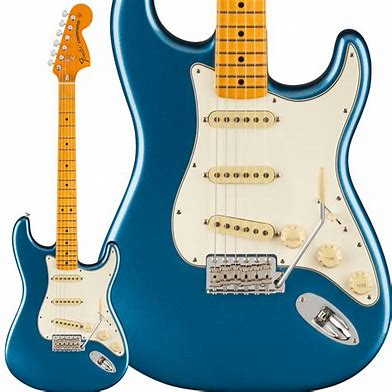

一言にギターと言っても実は様々な種類があります。ここでは代表的なモデルをいくつか紹介します。
ギターの種類
ストラトキャスター
もっともポピュラーで定番のモデル。あらゆるジャンルに使えるオールラウンダー。
テレキャスター
歯切れのよい音が特徴で、ロックやポップスなど幅広く使われる。
レスポール
ストラトキャスターと並ぶ定番のモデルで、ハードなロックに適している。ボディが重く、表面は湾曲している。
SG
レスポールの後継機で、短所であったボディの重さを軽量化したモデル。レスポール同様、ハードなロックに向いている。
ジャズマスター
ストラトキャスターの上位機種として発売されたモデル。パワーがないため、ロックには不向き。